This report examines whether integrating lending rails and AMM liquidity can sustainably improve capital efficiency in DeFi. Euler and Fluid are used as comparative case studies because both protocols explicitly design for this convergence, but through different architectures.
The core finding is that Lending x AMM meaningfully improves capital reuse in theory and in early growth metrics, but scalability still depends on three constraints: depth in stressed markets, liquidation quality under volatility, and risk-governance discipline as protocol complexity increases.
1. Why Lending and AMM Integration Matters
Traditional DeFi market structure separates two functions:
- Lending protocols optimize idle capital utilization (deposit/borrow rates).
- AMMs optimize price discovery and execution liquidity (swap fees).
Because these functions are usually isolated, one unit of capital often earns one type of yield at one time. The integration thesis is that the same balance sheet can support both borrowing activity and swap execution, potentially improving yield density per dollar of collateral.
2. Market Context
The lending market remains highly concentrated, with Aave still the structural leader. However, Euler and Fluid have posted materially higher short-window growth rates, suggesting clear demand for alternative efficiency models.
For Fluid specifically, a key growth driver is ultra-low swap pricing: stablecoin pairs (e.g., USDT/USDC) can be priced as low as 0.001%, below most competing DEX levels. This is economically feasible because LP economics are not funded only by swap fees; lending-side yield can subsidize LP returns, allowing lower explicit trading fees while preserving LP incentives.
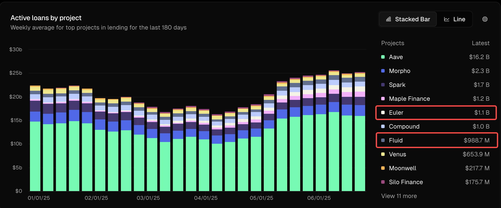
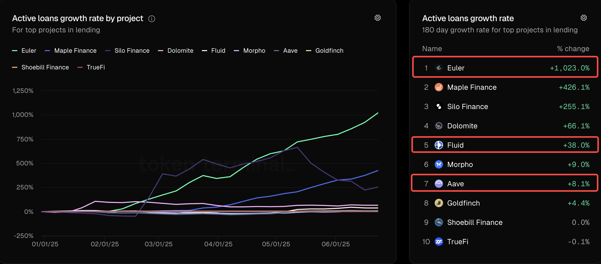
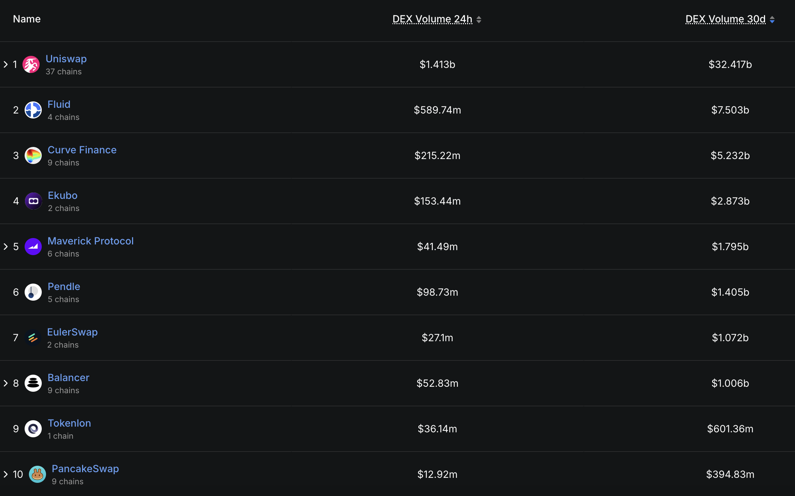
3. Comparative Framework: Euler vs Fluid
| Dimension | Fluid | Euler |
|---|---|---|
| Strategic Direction | Targets high-efficiency collateralized stablecoin borrowing and tightly integrated execution liquidity. | Builds modular lending markets with curator-managed risk parameters, extended by EulerSwap liquidity design. |
| Key Mechanism | Smart Collateral + Smart Debt, where trade flow can alter debt composition dynamically. | Isolated vault architecture + JIT liquidity, allowing LPs to scale effective exposure via lending rails. |
| Current Scale (source snapshot) | Active Loans ~902M; TVL ~1.7B. | Active Loans ~1B; TVL ~2B. |
| Competitive Reference | Closer to Aave-adjacent collateralized borrowing flows. | Closer to Morpho-like modular market expansion logic. |
4. Mechanism Primer
4.1 Fluid: Dynamic Debt Recomposition
In Fluid's model, a borrower's liabilities are not treated as fully static. As swaps occur in the integrated pool, debt composition can be rebalanced across assets. This means execution flow can partially offset borrow cost and convert inactive collateral into a fee-generating component.
Illustrative flow: assume a borrower starts with 100 USDT debt. A trader wants to swap 80 USDT for 80 USDC. The borrower effectively borrows 80 USDC against collateral, delivers USDC to the trader, and receives trading fees plus 80 USDT. After this transaction, the borrower's debt composition becomes 20 USDT + 80 USDC instead of the original single-asset USDT debt.
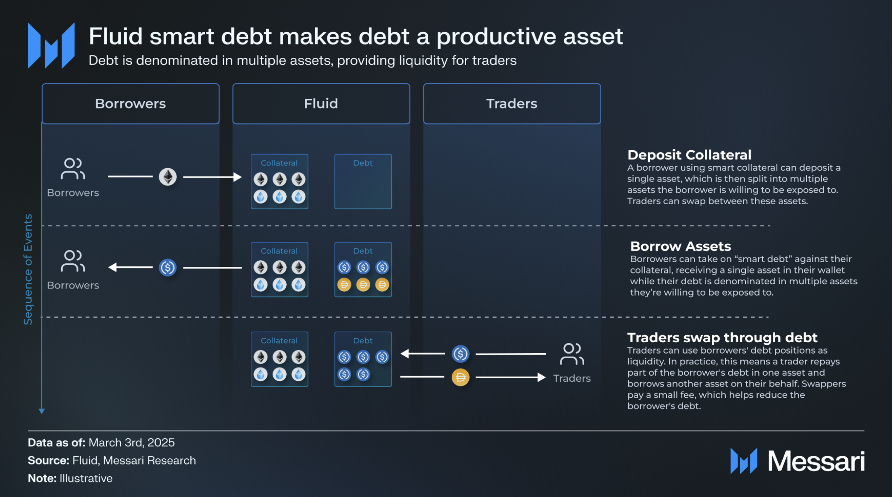
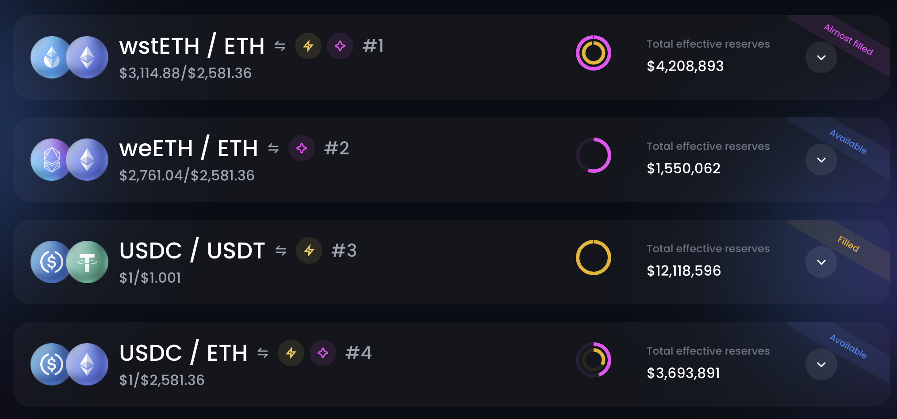
4.2 Euler: Modular Risk + JIT Liquidity
Euler separates risk configuration into market-level modules (vault-style design), then overlays swap-side liquidity behavior. JIT liquidity aims to provide execution support at the moment of trade using limited initial LP capital, with borrowing capacity filling the gap.
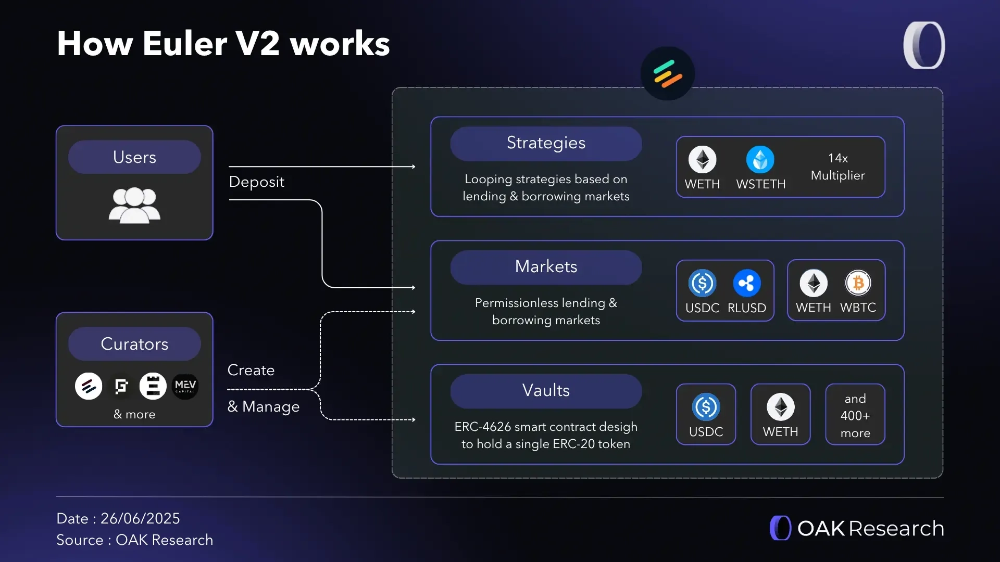
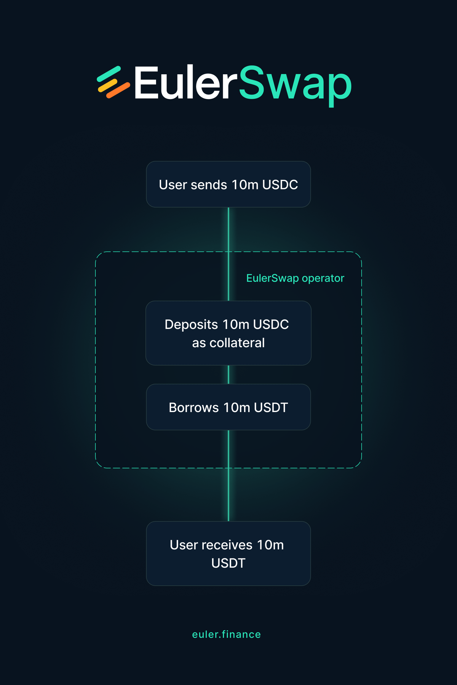
5. Quantitative Snapshot (As of 2025-06-20)
| Metric | Market Share | 90D Growth | Interpretation |
|---|---|---|---|
| Active Loans | Fluid 4.0% / Euler 3.7% | Fluid +54% / Euler +133% | Euler's growth slope is steeper; Fluid shows broader current usage. |
| TVL | Fluid 3.3% / Euler 2.9% | Fluid +37% / Euler +118% | Both protocols are in share-capture mode from a smaller base. |
| DAU | Fluid 16.6% / Euler 11.4% | Fluid +125% / Euler +267% | User participation is expanding rapidly, especially on Euler. |
| DEX Volume | Both are top-10 on ETH 30D basis | Sustained expansion phase | Integration model is gaining relevance at execution layer. |
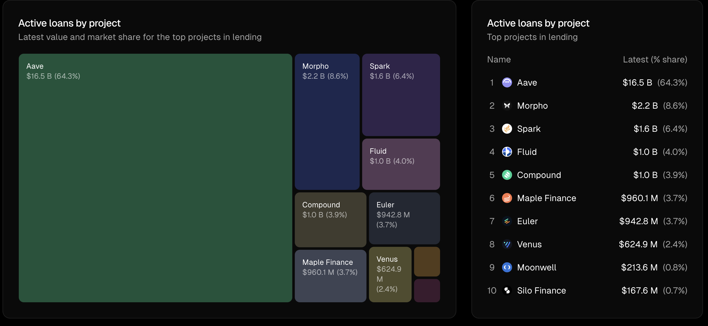
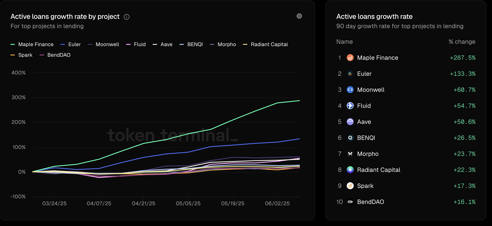
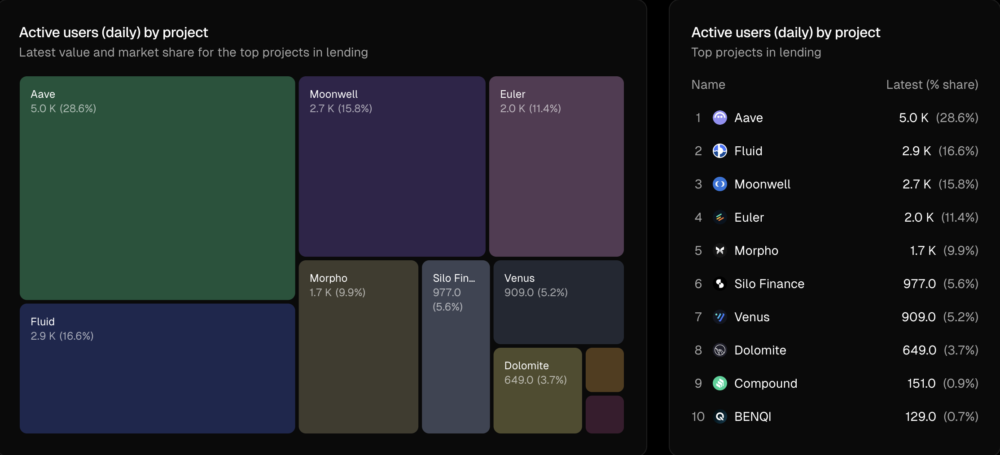
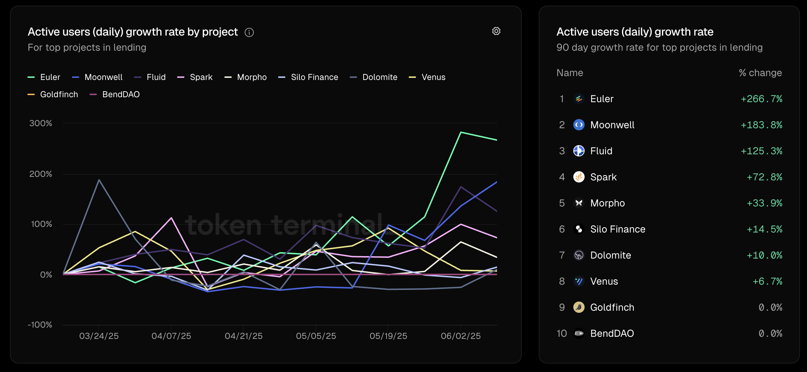
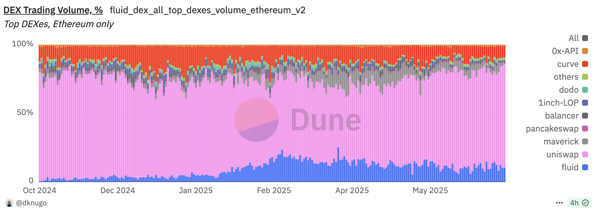
6. Risk Assessment
- Liquidity depth under stress: if exits are one-sided, AMM depth can thin out quickly and worsen liquidation slippage.
- Path-dependent debt risk: dynamic debt recomposition can amplify borrower health deterioration under persistent directional flow.
- Execution dependency: auction/liquidation design requires active liquidator participation and reliable on-chain execution capacity.
- Institutional migration inertia: large allocators still prioritize proven depth and security history over headline efficiency.
7. Conclusion
Lending-AMM convergence is best viewed as a structural design upgrade rather than a single feature narrative. Euler and Fluid demonstrate that deeper coupling between borrowing and execution can produce meaningful growth and improve capital utilization.
The next milestone is not incremental user growth alone, but resilience at larger scale: liquidation quality in volatile windows, stable depth across key pairs, and disciplined risk governance. Protocols that can meet those conditions are likely to define the next generation of DeFi core infrastructure.